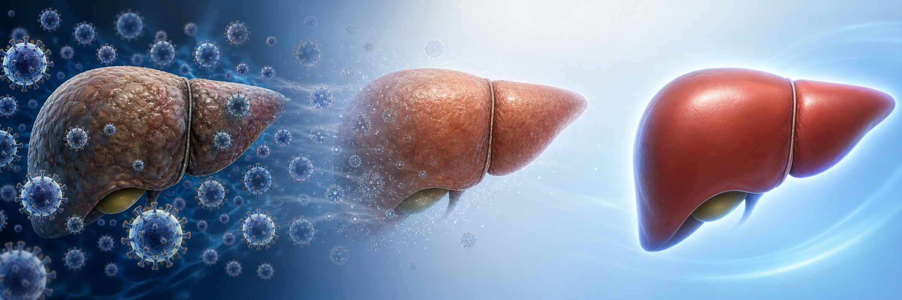

베피로비르센 3상,
B형간염 기능적 완치의 첫 현실 신호
B-Well 1·2 phase 3 — NA 치료로 바이러스가 억제된 비간경변 만성 B형간염에서 24주 피하주사 후 week 72 functional cure 19% vs 0%. 2026.05 NEJM 동시 게재·EASL 발표.
한 문단·세 숫자로 요약
현재 표준치료가 거의 도달하지 못하던 HBsAg 소실을, 선별된 환자군에서 의미 있게 끌어올린 결과
(233/1,220 vs placebo 0/614)
(200/768 vs placebo 0/393)
대조군 functional cure 0명 · p<0.001
기능적 완치: 바이러스 억제보다 한 단계 위
HBV DNA만 낮은 상태가 아니라, HBsAg까지 사라지고 치료 중단 후에도 유지되는 상태

B-Well 1·2: 같은 설계의 replicate phase 3
무작위·이중눈가림·위약대조, 29개국, 총 1,838명 — 24주 주사 후 week 72까지 durability 확인
두 3상 모두 primary endpoint 충족
B-Well 1과 B-Well 2가 거의 같은 크기의 효과를 보였다는 점이 핵심 — 막대 길이는 실제 비율에 비례
qHBsAg가 낮을수록 응답률이 올라간다
선별 치료의 핵심: 모든 HBV가 아니라 항원 burden이 낮은 환자에서 먼저 의미가 큼
이 약의 효과는 혈액검사 수치 하나(qHBsAg)로 미리 가늠할 수 있습니다.
표면항원 정량이 1000 IU/mL 이하면 4명 중 1명(26%)이 기능적 완치에 도달했고, 탐색 분석에서는 치료 종료 1년 후 qHBsAg ≤100 IU/mL까지 낮아진 환자가 49%였습니다. 치료 중단 후 HBV DNA 억제 지속도 전체군 23%, 저항원군 31%로 같은 방향이었습니다. HBV DNA만 보던 추적검사에 qHBsAg 정량을 더해야 하는 이유입니다.
왜 HBsAg가 떨어지는가: HBV RNA를 겨냥하는 ASO
베피로비르센은 HBV transcripts를 표적하는 antisense oligonucleotide — 항원 생산을 끊어 면역 회복의 공간을 만든다
효과만큼 안전성 모니터링도 중요하다
주사 부위 반응과 ALT 상승이 핵심. 치료 중 grade ≥3 AE는 bepirovirsen군에서 더 많았다
진료실에서 달라지는 질문: qHBsAg를 봐야 한다
HBV DNA 억제 여부만 보던 시대에서 기능적 완치 후보군 선별을 위한 표면항원 정량의 중요성이 커진다
- 목표 — HBV DNA 지속 억제
- 치료 기간 — 장기·평생 치료가 흔함
- 기능적 완치 — 자연·기존 치료에서 매우 드묾
- 추적 — ALT, HBV DNA, HBeAg, 간섬유화·간암 위험
- 목표 — HBsAg 소실 + DNA 억제 유지
- 치료 기간 — 24주 ASO 후 치료 중단 가능성 평가
- 선별 marker — qHBsAg ≤3000, 특히 ≤1000 IU/mL
- 추적 — ALT flare, qHBsAg 변화, week 48/72 durability
과대해석하면 안 되는 지점
첫 3상 functional cure 신호와 모든 만성 B형간염의 완치제 사이에는 아직 간격이 있다
환자에게는 이렇게 설명한다
기대감은 정확히 전달하되, 자의적 NA 중단과 완전 박멸 오해를 막아야 한다
B형간염 치료 목표가
DNA 억제에서 HBsAg 소실로 이동 중
베피로비르센은 2026년 현재 허가 전 investigational drug이지만, 기능적 완치를 현실적 endpoint로 끌어올린 첫 pivotal phase 3 자료다.
QR로 다시 보기